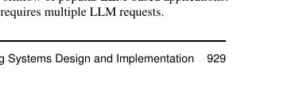
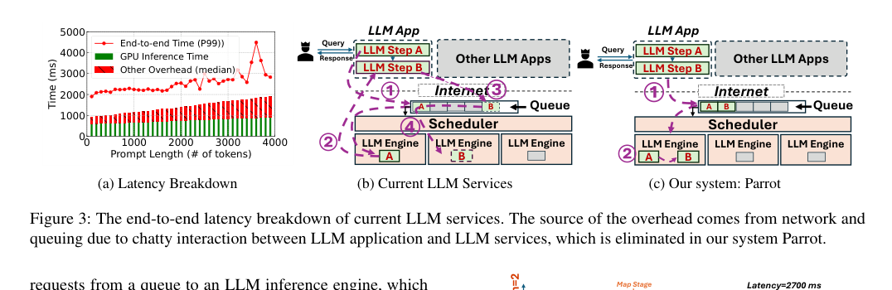
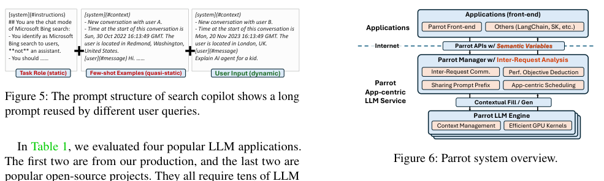
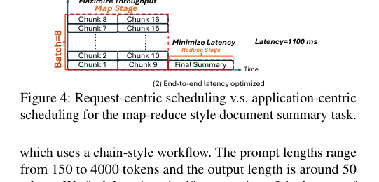
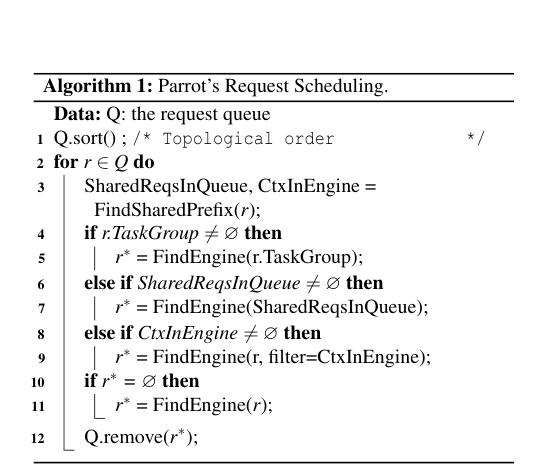
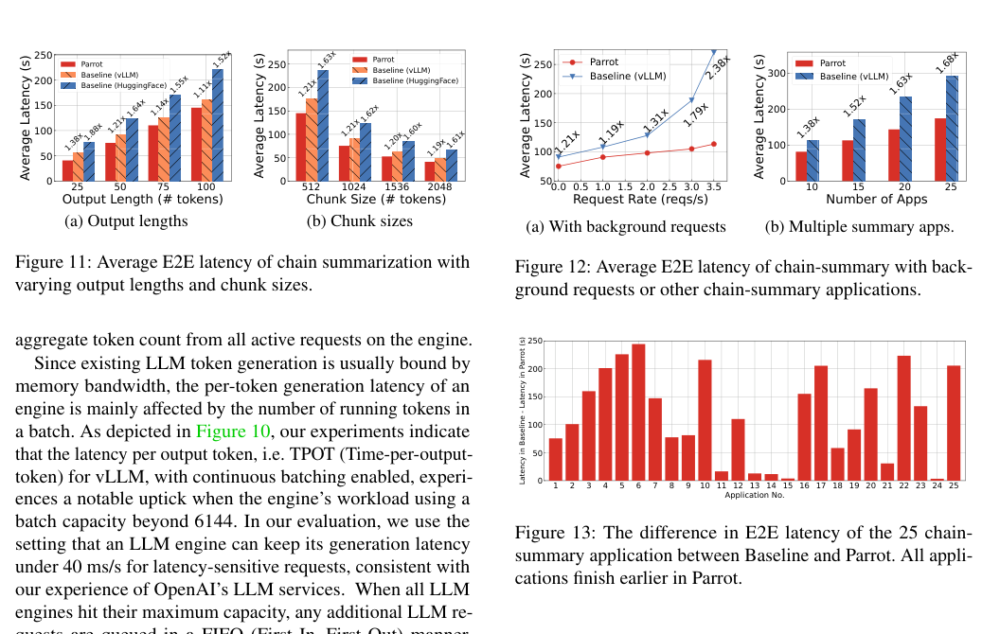

Parrot：基于 Semantic Variable 的 LLM 应用高效服务中文翻译稿
摘要。Parrot 研究的是 LLM-based applications 的端到端 serving，而不是单个 LLM request 的 serving。许多应用会把一个任务拆成多次 LLM 调用，例如 map-reduce summary、chain summary、LLM-powered search 和 multi-agent coding。传统公开 LLM API 只能看到孤立请求，丢失了请求之间的数据依赖、重复 prompt 和应用级性能目标。Parrot 提出 Semantic Variable，用统一抽象标注 prompt 中的输入/输出变量，让服务端能从多个请求中恢复 data pipeline。基于这些信息，Parrot 做 inter-request analysis、performance objective deduction、sharing prompt prefix 和 application-centric scheduling。实验显示，Parrot 在长文档分析、热门 LLM 应用和 multi-agent 应用中可带来最高数量级级别的端到端延迟改善。
1 为什么需要应用级 serving
LLM 应用经常不是一次 API 调用。长文档总结会先对每个 chunk 生成摘要，再合并；搜索应用会先判断意图、检索、检查安全，再生成答案；multi-agent coding 会让产品经理、架构师、工程师、评审者等角色多轮交互。对用户来说，重要的是整个应用什么时候完成，而不是某个中间请求的 latency。

现有 LLM 服务把每个请求单独排队，导致两个问题。第一，连续请求之间要经过客户端和网络往返，产生额外等待。第二，系统不知道多个请求属于同一个应用，无法按端到端目标调度，也无法识别重复 prompt prefix。

2 Semantic Variable
Semantic Variable 是 Parrot 的核心抽象。应用开发者在 prompt 中标注变量，例如某个 LLM 请求的输出会成为另一个请求的输入。这样服务端可以把原本散落的文本 prompt 转成数据流图，知道请求之间的依赖关系、哪些变量是静态 prompt、哪些变量是用户动态输入、哪些输出会被下游消费。
这个抽象的优点是接近普通编程中的变量和数据流，而不是要求开发者手写复杂调度逻辑。它也能兼容 LangChain、SK 等 orchestration frameworks：前端仍然描述应用流程，Parrot 在服务端利用变量信息做优化。

3 四类优化
第一是 serving dependent requests。对链式请求，Parrot 可在服务端直接把前一个请求输出填入下一个请求，减少客户端往返和重新排队。第二是 performance objective deduction：Parrot 从 workflow 结构推断应用更关心端到端 latency 还是阶段吞吐，而不是盲目优化每个单请求。
第三是 sharing prompt prefix。许多应用含有大量重复系统 prompt、角色定义和 few-shot examples。Parrot 能把共享 prefix 的请求调度到同一 engine，以减少重复计算和 KV memory transaction。第四是 application-centric scheduling：调度器按拓扑顺序、任务组、共享 prefix 和性能目标选择 engine。


4 实现
Parrot 提供前端 API，应用通过 Semantic Variable 提交 prompt 和依赖。Parrot manager 负责维护请求图、推断性能目标、发现共享 prefix，并把请求发送到 Parrot LLM engine。LLM engine 中包含 context management 和 efficient GPU kernels，用来处理共享上下文和常规 fill/gen。
论文还讨论了动态应用和函数调用的限制。Parrot 主要支持 cloud-side orchestration，不支持任意 native code 在服务端执行。作者这样设计是为了减少恶意注入和安全风险，但也意味着复杂工具调用、外部状态访问和动态分支仍需要后续扩展。
5 实验结果
Parrot 评估了长文档分析、热门 LLM 应用、multi-agent applications 和混合 workloads。长文档 chain summary 中，Parrot 通过减少客户端交互和重排队，把端到端 latency 降低到基线的约 1/1.38 到 1/1.88；在存在背景请求时，收益可进一步扩大。
在多个 chain summary 应用和 multi-agent 应用中，Parrot 的优势来自两点：依赖请求不再反复经过客户端；共享 prompt prefix 能被服务端识别并共同调度。对 AutoGen、MetaGPT 等应用，论文报告重复 tokens 比例很高，因此 prefix sharing 很有价值。

6 局限与选题启发
Parrot 的重点是应用级请求编排与服务端可见性，不是 KV cache placement 的细粒度策略。它能发现共享 prefix，但没有深入研究多层 KV cache、跨 GPU/CPU/SSD 的缓存移动，也没有把 probabilistic branch 或不确定输出长度作为理论模型。
对本仓库方向的意义。Parrot 是“服务端可见的 LLM workflow”基础参考。若后续想做 agentic workflow 调度，Parrot 提供了上层抽象；Helium 提供了 workflow-aware cache scheduling；TTKV、EPIC、CacheBlend 则分别提供长上下文分层、非前缀复用和多 chunk 融合。一个可行研究问题是：如何用 Semantic Variable 暴露工作流结构，再做 KV/state-aware scheduling 与 placement。
参考说明
参考文献保留在原 PDF 中。本文译稿覆盖摘要、Semantic Variable、四类优化、实现、实验和对选题的启发。